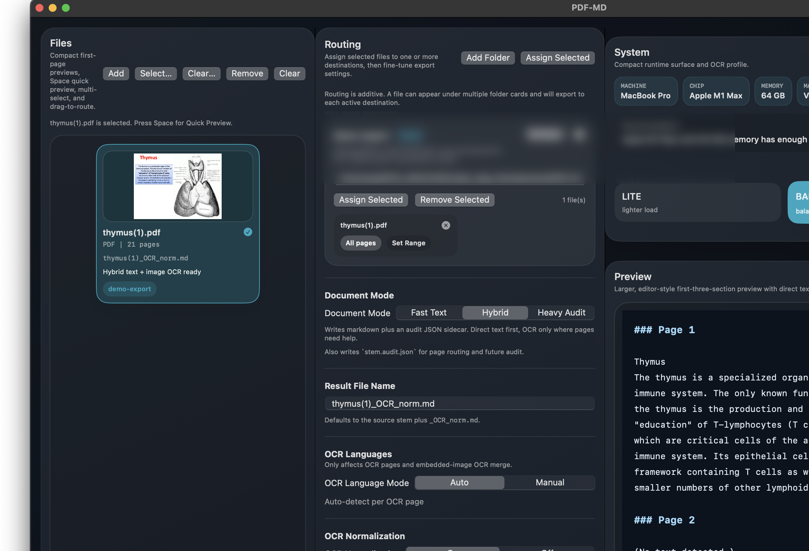
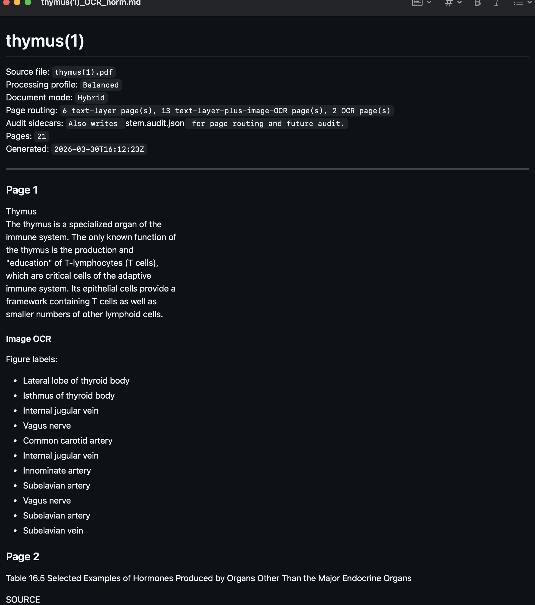
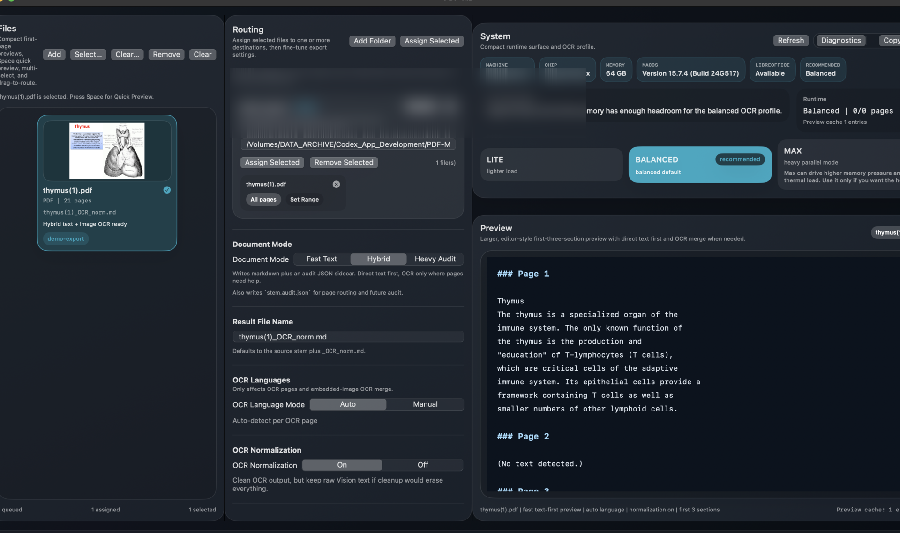
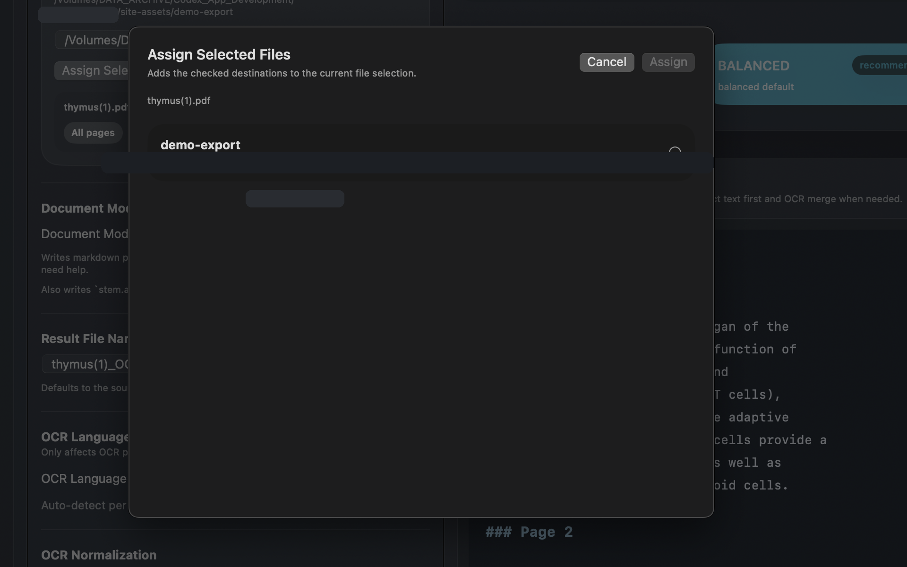
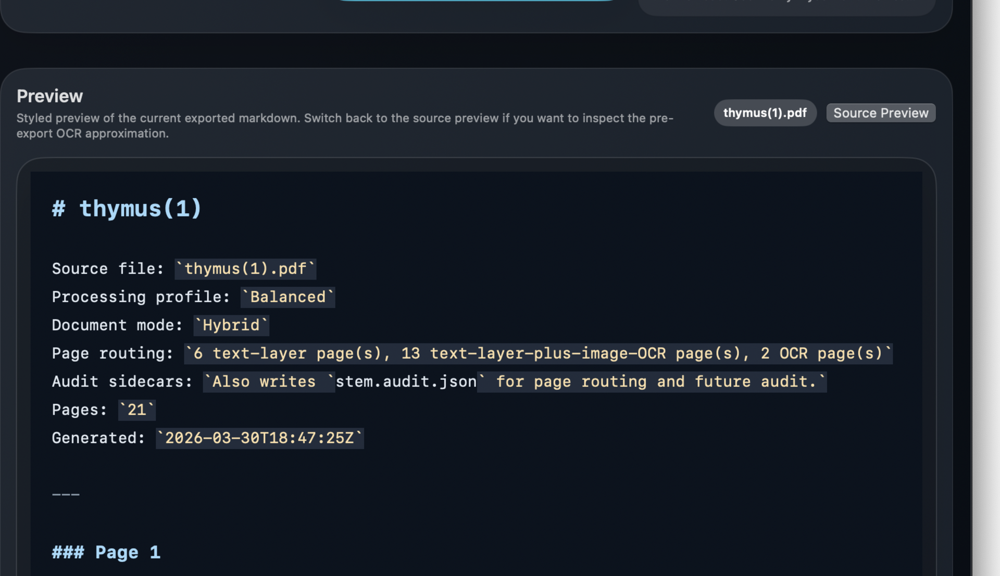
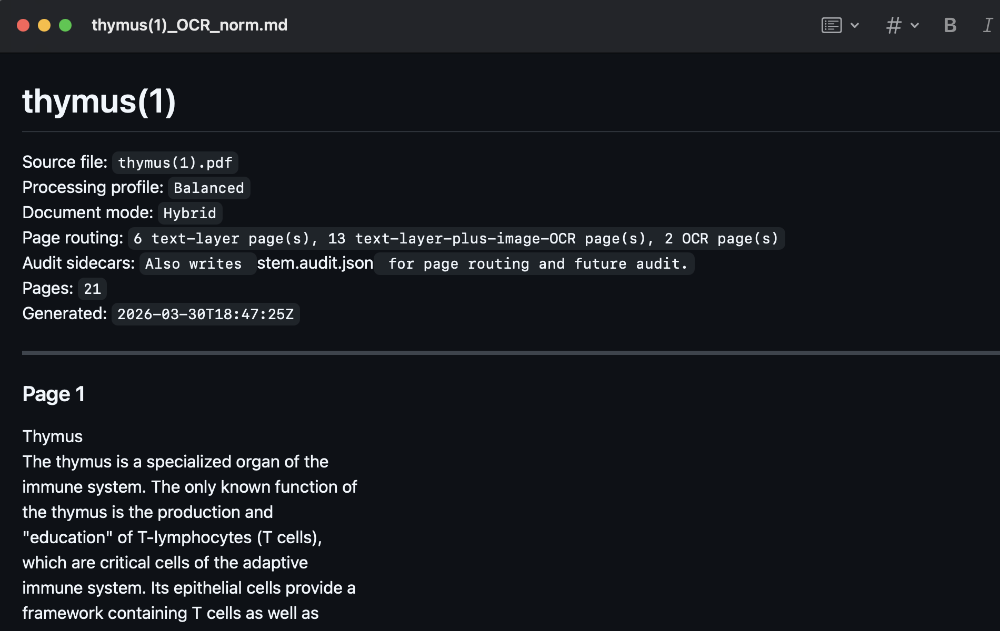

Select only what matters
Work from ChatGPT project output without dragging every answer into the final document.
Native macOS app
Scan Chrome ChatGPT tabs, select the responses you want, normalize math when it helps, edit the preview, and export clean Markdown to MarkEdit without rebuilding the same notes by hand.

What
GPT-MD is built for people who gather research, drafts, study material, and project output in ChatGPT but do not want to copy one answer at a time into a Markdown editor.
The app keeps the workflow narrow: find the supported browser material, select the responses worth keeping, preview and clean the Markdown, then send the result into a normal Mac writing workflow.
Work from ChatGPT project output without dragging every answer into the final document.
Use the preview and editing step to catch bad structure before the export becomes your source of truth.
Send clean Markdown to MarkEdit for the writing, citation, versioning, and cleanup work that comes next.
Why
Useful answers sit beside drafts, restarts, detours, and partial attempts across multiple tabs and windows.
Manual copying turns a review task into formatting work, especially when tables, code blocks, headings, and math are mixed together.
The final document should contain selected responses, not every message that happened to appear in a long thread.
Once the useful material is in Markdown, it can be edited, versioned, searched, quoted, and folded into normal writing tools.
When ChatGPT output mixes plain text formulas with markdown, optional LaTeX normalization helps the export survive downstream editing.
GPT-MD keeps selection, preview, and export visible in a Mac app instead of spreading the final check across browser tabs.
Advantage
A raw transcript preserves too much and explains too little. GPT-MD is built around the moment after a ChatGPT project has produced useful material: which answers belong in the final file, which ones should stay behind, and what the Markdown will look like before it leaves the app.
The app gives the workflow a concrete Mac surface: browser session discovery, grouped response review, optional formatting cleanup, styled or plain preview, and a direct handoff into MarkEdit-centered Markdown work.
Responses are reviewed and chosen before export, so the final file is not a blind archive of the whole thread.
Windows, tabs, responses, preview, and export controls stay in one workspace while you decide what to keep.
Styled and plain preview modes make the Markdown structure inspectable before the file becomes your source of truth.
Long ChatGPT projects can be treated as sets of windows, tabs, and responses instead of one long scroll.
Optional normalization helps formulas and lightweight math notation survive the trip into a real Markdown editor.
The output is Markdown that can move into MarkEdit and the rest of your Mac writing workflow.



Workflow
Start from the browser sessions where the source material already lives.
Keep the useful answers and leave behind the drafts, duplicates, and side trails.
Review the Markdown shape first, with math cleanup available when mixed formatting needs help.
Open the final Markdown in a Mac editor instead of keeping your notes trapped in a browser thread.

Proof
Control
Choose which responses become part of the export instead of treating the whole conversation as one undifferentiated block of text.
Result
Preview the Markdown before it moves downstream, then keep writing in MarkEdit or another Markdown-first workflow.
Exports are based on selected windows, tabs, and responses, so the final Markdown can be traced back to the choices made in the app.
The generated Markdown is visible before handoff, including headings, tables, code blocks, and math cleanup effects.
The app exposes export completion state and sends the final file into a normal editor workflow for continued review.
Need the evidence behind the claim?
Open the proof overview for the launch-readiness evidence, export benchmarking notes, and current commercial sweep boundaries.
Technical Specifications

Workspace
Review Chrome windows, tabs, responses, preview, and export controls in one native Mac app surface.

Response Selection
Choose the answers that belong in the final document and leave duplicates or drafts out of the export.

Post-Export Review
Inspect the generated Markdown immediately so structure problems can be caught before the file is reused.

Diagnostics
Use diagnostics and export state to understand what was selected, reviewed, and handed off.

Markdown Handoff
Open the result in MarkEdit or another Markdown-centered workflow after the in-app review pass.

Quick Preview
Check selected output quickly before deciding whether it belongs in the exported Markdown.
Buy
Personal License
One-time purchase for GPT-MD.
The real checkout is live at medout.lemonsqueezy.com/checkout/buy/40174261-ca0c-464d-b044-39bebae435b0.
Support email: worldpresident1030@gmail.com.
Legal
Local processing, supported browser metadata, diagnostics, and third-party checkout are documented in the policy draft.
Open Privacy PolicySale terms cover the software license, delivery, compatibility, refunds, and prohibited use in the source draft.
Open Terms of SaleThe proof page summarizes the launch-readiness evidence behind the export workflow.
Open Proof OverviewThe license terms describe permitted app use, restrictions, ownership, and compatibility boundaries.
Open EULA